v orodni vrstici.
v orodni vrstici.Masna
točka
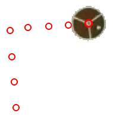
Sled
masne točke predstavlja maso, ki se giblje kot predmet velikosti
točke. To je najbolj osnoven model gibanja predmeta z vztrajnostjo.
Masne točke so gradniki, s katerimi v klasični fiziki gradimo
bolj kompleksne in realistične modele fizikalnih sistemov.
1. Označevanje in urejanje korakov
Masne
točje imajo privzeto vidne sledi. Sledi lahko skrijemo ali skrajšamo z
gumbom Sledi
v orodni vrstici.
Če želimo urediti oznako v danem koraku, jo izberemo in vlečemo ali uporabimo puščice na tipkah za premike po en piksel. Zelo podroben nadzor je možen pri veliki povečavi. Koordinate sveta lahko vnesemo tudi direktno v okencih v orodni vrstici.
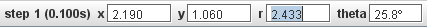
2. Nastavljanje
mase
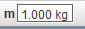
Vsaka na novo tvorjena masna točka ima privzeto maso 1.0 (v poljubnih enotah). Za spremembo vnesemo novo maso (m >= 0) v polje v orodni vrstici.
3. Prikaz
vektorjev gibanja
Vidnost
vektorjev vseh masnih točk preklapljamo z gumboma hitrost
 oziromr pospešek
oziromr pospešek
 v
orodni vrstici. Vektorji
so v začetku prilepljeni na njihove položaje (na primer rep
vektorja hitrosti za korak n je na položaju v koraku n).
v
orodni vrstici. Vektorji
so v začetku prilepljeni na njihove položaje (na primer rep
vektorja hitrosti za korak n je na položaju v koraku n).
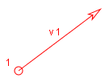
Opomba:
Nekateri vektorji gibanja, posebno vektorji pospeška, so lahko zelo
kratki. Umetno jih lahko "raztegnemo" s klikom na gumb raztegni
 v
orodni vrstici in z
izbiro faktorja raztegnitve v spustnem menuju.
v
orodni vrstici in z
izbiro faktorja raztegnitve v spustnem menuju.
Izgled vektorja gibanja masne točke lahko spremenimo s klikom na gumb sledi dane točke in z izbiro opcije izgled. Izgled ”velika puščica” je posebno primeren pri predstavitvah v velikih dvoranah.
4. Analiza
vektorjev gibanja
Komponente
vektorja prikažemo v orodni vrstici z izbiro vektorja tako, da kliknemo
nanj v njegovi sredini.
Vektor lahko odlepimo od njegovega položaja tako, da ga vlečemo in premikamo naokrog. Če ga spustimo tako, da bo njegov rep v bližini njegove pozicije, se bo nanjo spet prilepil..
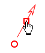 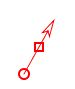
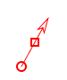
Če so vidne osi koordinatnega sistema, ga lahko prilepimo na izhodišče sistema. To je uporabno pri ocenjevanju in vizualizaciji njegovih komponent.
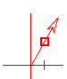
Vse vektorje lahko hitro prilepimo na koordinatno izhodišče ali na prvotno pozicijo z izbiro opcije Na izhodišče oziroma Na pozicijo v menuju sledi masne točke..
5. Prikaz
vektorjev gibalne količine in sile rezultante
Sklikom na
gumb dinamika  v orodni vrstici sprožimo množenje
vektorjev hitrosti in pospeška z njihovo maso. Tako dobimo gibalno
količino
in rezultatno silo.
v orodni vrstici sprožimo množenje
vektorjev hitrosti in pospeška z njihovo maso. Tako dobimo gibalno
količino
in rezultatno silo.
6. Povezovanje
vektorjev gibanja
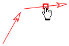 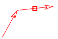
Vektorje lahko povezujemo v zaporedje puščic in repov , kar omogoča grafično določanje vsote vektorjev. Vektorje povezujemo z vlečenjem in spuščamjem repa prvega na puščico drugega. Spuščeni vektor se bo pri povezavi prilepil na vrh drugega. Postopek lahko nadaljujemo in tako oblikujemo verigo.
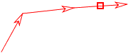
Opomba: Tracker ne preverja ali je neko povezovanje množice vektorjev matematično ali fizikalno smiselno. --On to preprosto omogoča.
Ko spustimo v verigo prvi vektor (torej vektor s še nepovezanim repom), se veriga premika kot enota in vektorji ostanejo povezani. Ko pa nek vektor odmaknemo z verige, se veriga tu prelomi.
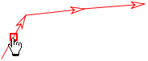 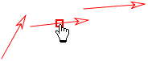